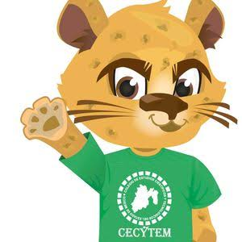
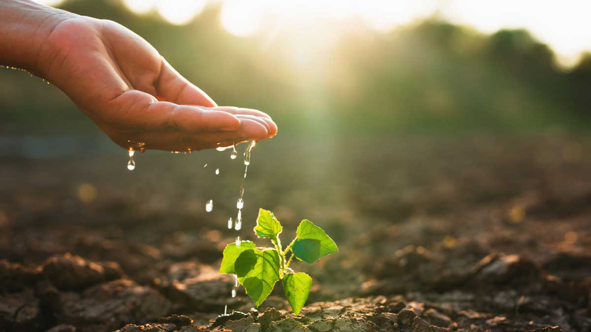
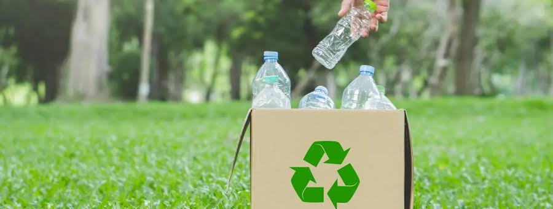
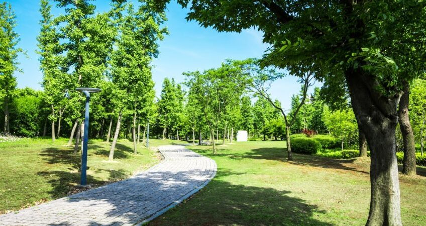

La Sustentabilidad, se refiere a la capacidad de satisfacer las necesidades del presente sin comprometer la capacidad de las futuras generaciones para satisfacer sus propias necesidades. Este concepto fundamental se basa en un equilibrio entre tres pilares: la protección ambiental (cuidar el planeta y sus recursos), la equidad social (asegurar el bienestar de las personas) y el desarrollo económico (promover la prosperidad).

Cuidar el agua significa usarla de manera responsable y racional, es decir, evitar su derroche, proteger las fuentes naturales de este recurso y asegurar su calidad para las generaciones presentes y futuras. El agua es un recurso esencial para la vida en el planeta y para la mayoría de las actividades humanas, desde el consumo diario hasta la producción industrial y agrícola. Por esa razón, el cuidado del agua es fundamental para el normal desenvolvimiento de la vida en la Tierra.

El reciclaje es la recolección y el procesamiento de desechos como el papel y cartón, vidrio o plástico. Este supone crear nuevos productos basados en esos mismos materiales. Una nueva oportunidad para la Tierra, a la que se puede proteger si se entienden los beneficios del reciclaje, la manera correcta de separar los residuos y los retos a los que se enfrenta esta actividad.

Las áreas verdes son los pulmones verdes de tu comunidad por la calidad del aire. Estos espacios ofrecen un refugio de tranquilidad en medio del ajetreo urbano, ayudando a reducir el estrés. Por eso es de vital importancia tomar acciones para el cuidado de las áreas verdes.Para cuidar las áreas verdes de manera efectiva, es necesario realizar un mantenimiento constante que incluya riego adecuado, limpieza de residuos y respeto por la flora y fauna local.
